Bachelor of Mathematics
The University of Queensland — Mathematical Artificial Intelligence (Major), Computer Science (Minor)
Algorithms & Data StructuresDeep LearningObject-Oriented ProgrammingStatistical Inference
Brisbane, AU · BMath ’27 · The University of Queensland
I’m Maxwell - a second-year Bachelor of Mathematics (Mathematical AI + Computer Science) student at UQ. I build projects across statistical machine learning, finance, and mathematical modelling, and read the wonderful literature behind them for fun.
Reading: Reliability and Risk - A Bayesian Perspective
Projects
Three quantitative projects, each validated out-of-sample. Code on GitHub.
Selected cointegrated pairs offline via Engle–Granger and ADF stationarity testing, modelled mean-reverting spreads as Ornstein–Uhlenbeck processes, and hedged residual exposure against the index. Volatility-scaled sizing; validated by walk-forward backtesting on unseen data.
Formulated liquidation as continuous-time stochastic control, solved the linear-quadratic benchmark analytically, and extended to nonlinear market impact with neural-network approximation. (Still a work in progress :D)
Daily factor returns via cross-sectional WLS; EWMA/Newey–West factor covariance with PSD enforcement and shrunk specific risk. Euler risk decomposition and walk-forward volatility-forecast validation.
About
I’m studying a Bachelor of Mathematics at UQ, majoring in Mathematical Artificial Intelligence with a minor in Computer Science. My coursework centres on statistical machine learning, financial mathematics, programming, and optimisation.
Outside lectures I design and build projects that bridge data science, machine learning, and mathematical modelling — and I keep a running stack of maths journals and books on the go.
Aside from my studies in mathematics, I have a passion for music performance and composition, including playing piano and percussion in pit bands, symphony orchestras, and other ensembles!
The University of Queensland — Mathematical Artificial Intelligence (Major), Computer Science (Minor)
Experience
Connect Education — Brisbane, QLD
Private · All Access Education · KIS Academics — hybrid
Skills
Reading
The current collection! Skim through it iPod-classic style.
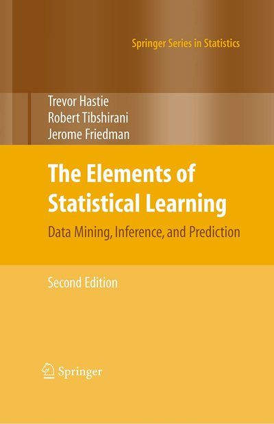
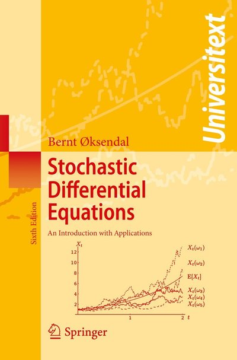
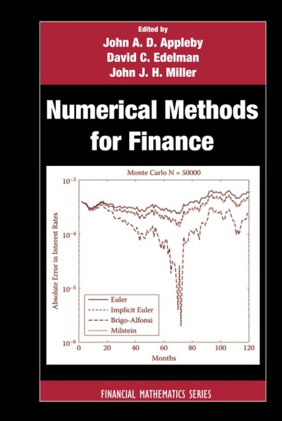
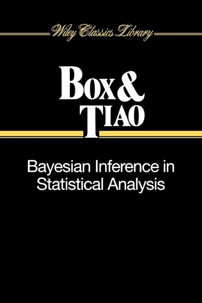
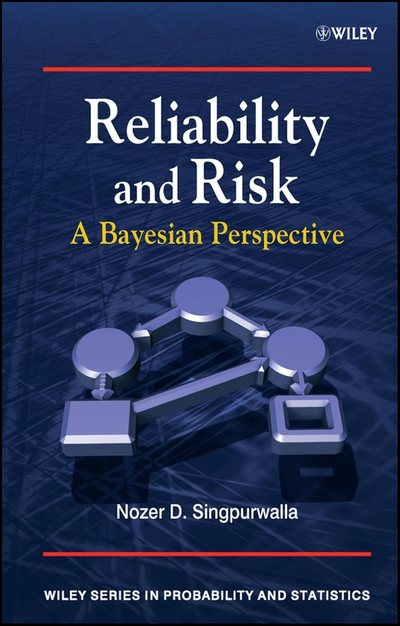
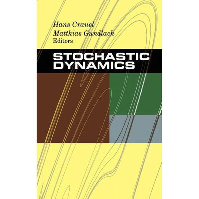
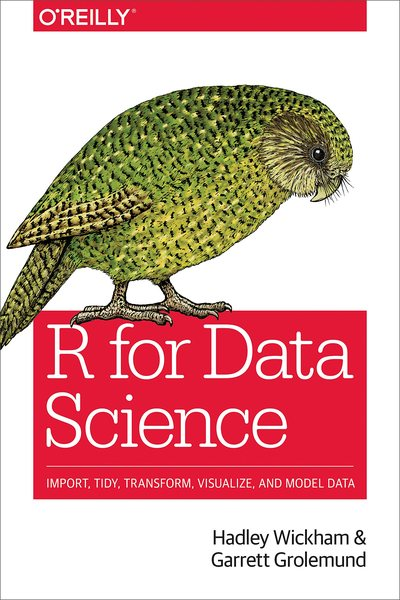
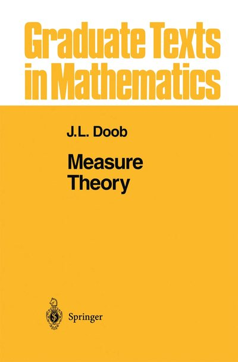
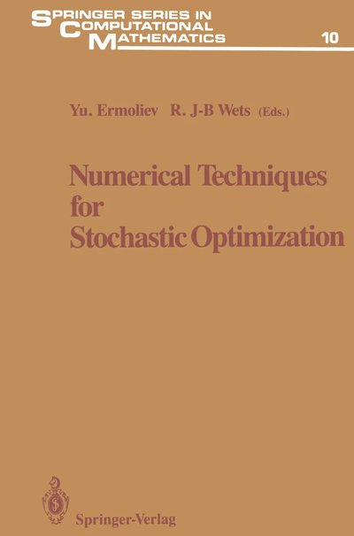
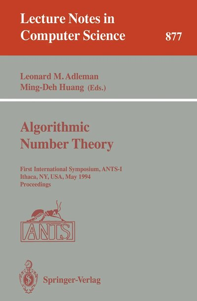
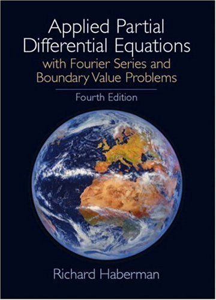
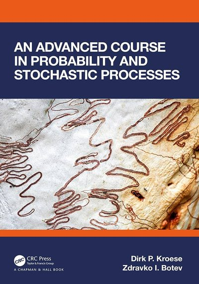
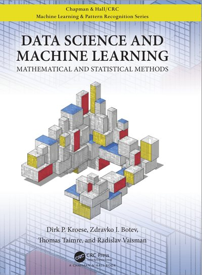
Music
Rehearsals are the other place I practise pattern recognition.
Current ensemble
Percussion, repertoire including Shostakovich 5 & Khachaturian Masquerade!
Current ensemble
Glockenspiel/Bells for Mahler 7! A long piece to say the least, but memorable!
Current ensemble
Never a quiet day in UQWS, from slapsticks to brake drums, my ears are always in for a treat!